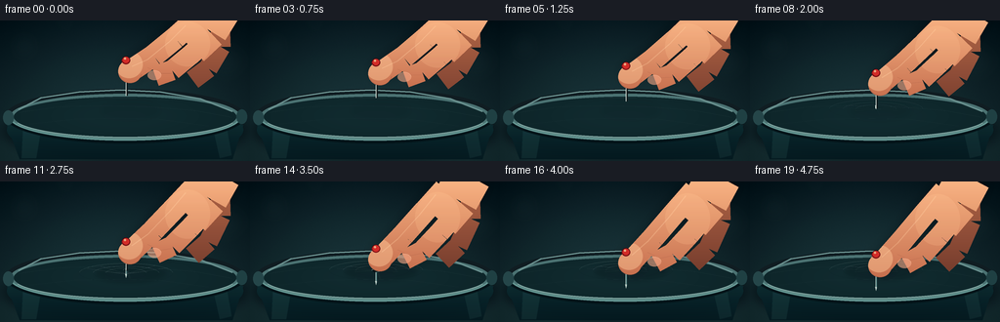
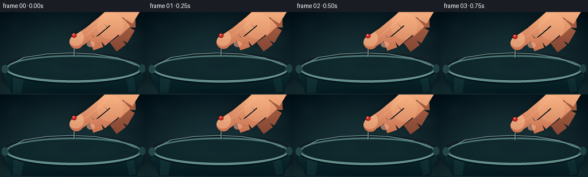

CODING AGENTS AS PIXEL WORLD MODELS
traex/GPT-5.6-Sol · mechanics_0032
点击播放 · 原生 RGB 像素
逐轮保存的候选
回放视频、检查图与代码变化。
每份候选均可单独播放。实际图片检查记录在下方工具轨迹中。
候选 01播放与检查图
点击播放 · 原生 RGB 像素

展开代码变化
--- 上一保存版本
+++ 本次保存版本
@@ -0,0 +1,274 @@
+from pathlib import Path
+import math
+import numpy as np
+from PIL import Image, ImageDraw, ImageFilter
+import artifact_io
+
+# Procedural macro shot: a hand lowers a dressmaker's pin into taut transparent film.
+W, H, N, S = 256, 144, 20, 4
+SW, SH = W*S, H*S
+rng = np.random.default_rng(3203)
+
+
+def smstep(a, b, x):
+ q = np.clip((x-a)/(b-a), 0.0, 1.0)
+ return q*q*(3-2*q)
+
+
+def mask_layer():
+ return Image.new('L', (SW, SH), 0)
+
+
+def ellipse(draw, box, fill, **kw):
+ draw.ellipse(tuple(int(v*S) for v in box), fill=fill, **kw)
+
+
+def line(draw, pts, fill, width, **kw):
+ draw.line([(int(x*S), int(y*S)) for x,y in pts], fill=fill,
+ width=max(1,int(width*S)), **kw)
+
+
+def poly(draw, pts, fill):
+ draw.polygon([(int(x*S), int(y*S)) for x,y in pts], fill=fill)
+
+
+def layer_color(im, color, mask):
+ lay = Image.new('RGB', im.size, color)
+ im.paste(lay, (0,0), mask)
+
+
+def gradient_fill(im, mask, top, bottom, y0=0, y1=144):
+ arr = np.zeros((SH, SW, 3), np.uint8)
+ yy = np.clip((np.arange(SH)/S-y0)/max(1e-6,y1-y0), 0, 1)[:,None,None]
+ c0 = np.array(top, float)[None,None,:]
+ c1 = np.array(bottom, float)[None,None,:]
+ arr[:] = np.clip(c0*(1-yy)+c1*yy,0,255).astype(np.uint8)
+ im.paste(Image.fromarray(arr), (0,0), mask)
+
+
+def blurred_shadow(im, draw_fn, opacity=90, blur=5, color=(5,12,18)):
+ m=mask_layer(); d=ImageDraw.Draw(m); draw_fn(d)
+ m=m.filter(ImageFilter.GaussianBlur(blur*S))
+ if opacity != 255:
+ m=m.point(lambda p: p*opacity/255)
+ layer_color(im,color,m)
+
+
+def hand_mask(move):
+ """Connected hand silhouette; index fingertip presses the pin head."""
+ m=mask_layer(); d=ImageDraw.Draw(m)
+ # Broad palm entering from upper-right.
+ line(d, [(224,-13+move*.25),(211,8+move*.35),(193,25+move*.48)], 255, 46)
+ # Index finger, extended diagonally down-left.
+ line(d, [(199,0+move*.28),(179,18+move*.43),(157,36+move*.67),(133,52+move)], 255, 23)
+ # Soft fingertip end (line cap reinforcement).
+ ellipse(d, (121,40+move,145,64+move),255)
+ # Thumb curled in toward the pin from right.
+ line(d, [(211,21+move*.42),(194,36+move*.58),(176,51+move*.72),(159,57+move*.82)],255,21)
+ return m
+
+
+def render_frame(i):
+ t=i/(N-1)
+ p=smstep(0,1,t)
+ # The pin travels ~35 px. Contact begins around frame 7; puncture around frame 12.
+ move=34*p
+ head_y=39+move
+ tip_y=head_y+38
+ contact=np.clip((tip_y-88)/11,0,1)
+ pierced=smstep(.57,.72,p)
+ # Film dimples while resisting, then snaps almost flat around the pin.
+ pre_def=min(max(tip_y-88,0),11)
+ dimple=pre_def*(1-pierced) + (2.1+0.5*math.sin(t*math.pi))*pierced
+ cx=129.0
+ base_y=90.0
+
+ # Moody photographic studio background.
+ yy,xx=np.mgrid[0:SH,0:SW]
+ xf=xx/S; yf=yy/S
+ bg=np.zeros((SH,SW,3),dtype=float)
+ top=np.array([11,25,31.]); bot=np.array([27,48,52.])
+ q=(yf/H)[...,None]
+ bg=top*(1-q)+bot*q
+ # A gentle pool of cool light behind the subject.
+ glow=np.exp(-(((xf-116)/112)**2+((yf-75)/92)**2))[...,None]
+ bg += glow*np.array([9,16,17.])
+ # Vignette and stable fine sensor grain.
+ vig=np.clip(((xf-128)/176)**2+((yf-72)/118)**2,0,1)[...,None]
+ bg-=vig*np.array([8,10,10.])
+ noise=rng.normal(0,0.9,(SH,SW,1)) if i==0 else None
+ # deterministic identical fine grain pattern across frames
+ local_rng=np.random.default_rng(883)
+ noise=local_rng.normal(0,0.72,(SH,SW,1))
+ bg=np.clip(bg+noise,0,255).astype(np.uint8)
+ im=Image.fromarray(bg,'RGB')
+
+ # Defocused highlights in the workshop background.
+ bokeh=Image.new('RGBA',(SW,SH),(0,0,0,0)); bd=ImageDraw.Draw(bokeh)
+ for bx,by,br,a in [(25,27,14,22),(231,42,20,15),(67,8,9,18),(235,103,13,12)]:
+ ellipse(bd,(bx-br,by-br,bx+br,by+br),(91,151,148,a))
+ bokeh=bokeh.filter(ImageFilter.GaussianBlur(10*S))
+ im=Image.alpha_composite(im.convert('RGBA'),bokeh).convert('RGB')
+
+ # Glass/metal stretching hoop beneath the film: shadow and body first.
+ blurred_shadow(im, lambda d: ellipse(d,(3,84,253,143),220), 145,5,(2,8,12))
+ body=mask_layer(); dd=ImageDraw.Draw(body)
+ # Lower cylindrical wall visible below the elliptical rim.
+ ellipse(dd,(7,82,249,142),220)
+ poly(dd,[(7,107),(249,107),(238,142),(20,142)],220)
+ gradient_fill(im,body,(23,64,70),(8,27,33),78,145)
+ # Vertical glass reflections.
+ gloss=Image.new('RGBA',(SW,SH),(0,0,0,0)); gd=ImageDraw.Draw(gloss)
+ poly(gd,[(24,101),(43,105),(37,141),(22,141)],(118,199,196,20))
+ poly(gd,[(216,101),(230,98),(237,138),(225,141)],(125,213,210,16))
+ im=Image.alpha_composite(im.convert('RGBA'),gloss).convert('RGB')
+
+ # Rear half of the metal hoop, mostly visible through the clear sheet.
+ rim=Image.new('RGBA',(SW,SH),(0,0,0,0)); rd=ImageDraw.Draw(rim)
+ ellipse(rd,(5,70,251,126),(21,34,39,255))
+ ellipse(rd,(10,75,246,122),(77,115,117,255))
+ ellipse(rd,(14,78,242,119),(13,33,38,255))
+ # Highlights on back rim.
+ line(rd,[(19,91),(42,79),(81,73),(123,71),(164,73),(205,80),(238,93)],(144,190,188,180),1.5)
+ im=Image.alpha_composite(im.convert('RGBA'),rim).convert('RGB')
+
+ # Taut plastic membrane, translucent and slightly milky.
+ film_m=mask_layer(); fd=ImageDraw.Draw(film_m)
+ ellipse(fd,(14,77,242,120),205)
+ # Layering of cool transparent film.
+ film_arr=np.zeros((SH,SW,4),np.uint8)
+ film_arr[...,0]=72; film_arr[...,1]=126; film_arr[...,2]=132
+ # Slight center translucency variation.
+ radial=np.exp(-(((xf-128)/112)**2+((yf-98)/29)**2))
+ film_arr[...,3]=np.clip(18+30*radial,0,60).astype(np.uint8)
+ film_rg=Image.fromarray(film_arr,'RGBA')
+ film_rg.putalpha(Image.fromarray((np.asarray(film_m,dtype=np.float32)*(film_arr[...,3]/255)).astype(np.uint8)))
+ im=Image.alpha_composite(im.convert('RGBA'),film_rg).convert('RGB')
+
+ # Hand's soft cast shadow falls across the film and sharpens on approach.
+ shadow_op=int(23+contact*38)
+ blurred_shadow(im,
+ lambda d: ellipse(d,(cx-27-contact*5,base_y-7+dimple*.25,cx+36+contact*6,base_y+11+dimple*.35),230),
+ shadow_op,3.4-contact*1.3,(7,18,22))
+
+ # Film stress field: broad specular arcs and converging tension creases.
+ stress=Image.new('RGBA',(SW,SH),(0,0,0,0)); sd=ImageDraw.Draw(stress)
+ # Stable, subtle stretched-film striations.
+ line(sd,[(20,94),(61,88),(103,87),(150,88),(199,92),(237,99)],(185,232,228,38),.65)
+ line(sd,[(30,106),(76,101),(117,100),(163,101),(214,108)],(176,223,220,25),.55)
+ line(sd,[(47,82),(88,79),(139,79),(188,82)],(220,246,239,28),.6)
+ if contact>0:
+ # Elliptical deformation rings; center follows the pin downward.
+ cy=base_y+dimple*.48
+ for j,(rx,ry) in enumerate([(48,10),(34,7),(21,4.7)]):
+ a=int((24+contact*35)*(1-j*.12))
+ box=(cx-rx,cy-ry-contact*j*.35,cx+rx,cy+ry+contact*j*.55)
+ sd.arc(tuple(int(v*S) for v in box),185,356,fill=(209,245,240,a),width=max(1,int(.7*S)))
+ sd.arc(tuple(int(v*S) for v in box),5,176,fill=(17,49,55,int(a*.65)),width=max(1,int(.55*S)))
+ # Radial creases drawn toward the point, strongest just before failure.
+ crease_a=int(contact*(1-.45*pierced)*78)
+ for ang,ln in [(-174,40),(-150,30),(-29,34),(-8,43),(153,24),(27,25)]:
+ ar=math.radians(ang)
+ ex=cx+math.cos(ar)*ln; ey=base_y+math.sin(ar)*ln*.22
+ line(sd,[(ex,ey),(cx,base_y+dimple*.55)],(205,240,235,crease_a),.55)
+ stress=stress.filter(ImageFilter.GaussianBlur(.18*S))
+ im=Image.alpha_composite(im.convert('RGBA'),stress).convert('RGB')
+
+ # Reflection of the needle in the shiny film before drawing the actual pin.
+ if contact>0:
+ refl=Image.new('RGBA',(SW,SH),(0,0,0,0)); rfd=ImageDraw.Draw(refl)
+ line(rfd,[(cx+1,base_y+1),(cx+4,base_y+8+2*contact)],(177,223,222,int(52*contact)),1.0)
+ refl=refl.filter(ImageFilter.GaussianBlur(.8*S))
+ im=Image.alpha_composite(im.convert('RGBA'),refl).convert('RGB')
+
+ # Needle: dark offset gives the very thin shaft definition at video resolution.
+ needle=Image.new('RGBA',(SW,SH),(0,0,0,0)); nd=ImageDraw.Draw(needle)
+ shaft_top=head_y+3
+ # Segment below the plastic is visible, cool-tinted through the clear film.
+ if tip_y>base_y:
+ line(nd,[(cx,base_y-1),(cx,tip_y-1)],(112,164,166,190),1.55)
+ line(nd,[(cx-.35,base_y),(cx-.35,tip_y-2)],(221,241,233,210),.5)
+ # Point taper
+ poly(nd,[(cx-0.8,tip_y-3),(cx+0.8,tip_y-3),(cx,tip_y+1)],(207,225,219,230))
+ # Upper polished steel shaft.
+ line(nd,[(cx+.75,shaft_top),(cx+.75,min(tip_y,base_y+1))],(24,34,36,235),2.0)
+ line(nd,[(cx,shaft_top),(cx,min(tip_y,base_y+1))],(225,235,229,255),.8)
+ im=Image.alpha_composite(im.convert('RGBA'),needle).convert('RGB')
+
+ # The actual puncture appears as a tiny dark slit and parted plastic lips.
+ if pierced>0.03:
+ hole=Image.new('RGBA',(SW,SH),(0,0,0,0)); hd=ImageDraw.Draw(hole)
+ hy=base_y+1.2
+ rx=1.5+1.8*pierced; ry=.7+1.0*pierced
+ ellipse(hd,(cx-rx,hy-ry,cx+rx,hy+ry),(3,16,20,int(210*pierced)))
+ # Two minute bright torn edges.
+ line(hd,[(cx-rx-1,hy-.7),(cx-1,hy-1.8)],(226,249,241,int(180*pierced)),.65)
+ line(hd,[(cx+1,hy+1.5),(cx+rx+1,hy+.55)],(176,222,218,int(145*pierced)),.65)
+ im=Image.alpha_composite(im.convert('RGBA'),hole).convert('RGB')
+
+ # Hand shadow on background/body, displaced down with the hand.
+ hm=hand_mask(move)
+ hshadow=hm.filter(ImageFilter.GaussianBlur(5*S)).transform((SW,SH),Image.AFFINE,(1,0,-3*S,0,1,4*S))
+ hshadow=hshadow.point(lambda q:q*.28)
+ layer_color(im,(2,8,10),hshadow)
+
+ # Rear curled finger, darker than the main hand and partly occluded.
+ rear=mask_layer(); red=ImageDraw.Draw(rear)
+ line(red,[(225,-1+move*.22),(226,27+move*.4),(213,49+move*.62),(197,61+move*.72)],255,20)
+ gradient_fill(im,rear,(173,103,74),(119,65,51),0,90)
+ # Main hand with warm skin gradient.
+ hm=hand_mask(move)
+ gradient_fill(im,hm,(239,176,132),(187,104,76),-5+move*.2,78+move)
+
+ # Warm key-light and soft red shadow modulation clipped to hand.
+ hand_light=Image.new('RGBA',(SW,SH),(0,0,0,0)); hld=ImageDraw.Draw(hand_light)
+ ellipse(hld,(118,31+move,146,59+move),(255,212,168,95))
+ ellipse(hld,(169,1+move*.35,215,47+move*.55),(255,203,157,45))
+ hand_light.putalpha(Image.composite(hand_light.getchannel('A'),Image.new('L',(SW,SH),0),hm))
+ im=Image.alpha_composite(im.convert('RGBA'),hand_light).convert('RGB')
+
+ # Skin contour / nail cues make the hand readable rather than an abstract shape.
+ detail=Image.new('RGBA',(SW,SH),(0,0,0,0)); hd=ImageDraw.Draw(detail)
+ # Fingertip underside crease above the pin head.
+ hd.arc(tuple(int(v*S) for v in (122,43+move,145,64+move)),8,158,fill=(124,66,53,105),width=max(1,int(.7*S)))
+ line(hd,[(151,48+move*.78),(164,54+move*.78),(175,54+move*.7)],(121,64,52,65),.65)
+ # Small nail on curled thumb.
+ ellipse(hd,(151,51+move*.82,165,61+move*.82),(236,166,135,155))
+ hd.arc(tuple(int(v*S) for v in (151,51+move*.82,165,61+move*.82)),185,355,fill=(255,209,176,135),width=max(1,int(.65*S)))
+ # Fine highlight along index finger.
+ line(hd,[(190,5+move*.3),(173,22+move*.45),(151,40+move*.68),(135,47+move*.9)],(255,217,176,67),1.0)
+ im=Image.alpha_composite(im.convert('RGBA'),detail).convert('RGB')
+
+ # Red glass pin head on top of the shaft, visibly pressed by the fingertip.
+ ph=Image.new('RGBA',(SW,SH),(0,0,0,0)); pd=ImageDraw.Draw(ph)
+ ellipse(pd,(cx-4.3,head_y-2.4,cx+4.3,head_y+5.8),(126,21,25,255))
+ ellipse(pd,(cx-3.3,head_y-1.7,cx+3.3,head_y+4.7),(205,48,45,255))
+ ellipse(pd,(cx-2.1,head_y-1.1,cx+.1,head_y+1.2),(255,181,139,225))
+ # tiny contact shadow from finger over bead
+ pd.arc(tuple(int(v*S) for v in (cx-4.3,head_y-2.5,cx+4.3,head_y+5.8)),190,345,fill=(65,10,16,190),width=max(1,int(.65*S)))
+ im=Image.alpha_composite(im.convert('RGBA'),ph).convert('RGB')
+
+ # Front hoop sits over the sheet edge, emphasizing that it is stretched taut.
+ front=Image.new('RGBA',(SW,SH),(0,0,0,0)); fr=ImageDraw.Draw(front)
+ # Only front arcs of nested ellipses.
+ for box,col,wid,start,end in [((5,70,251,126),(9,25,30,255),4.0,12,168),
+ ((9,74,247,123),(103,153,151,245),2.0,10,170),
+ ((12,77,244,120),(190,224,217,165),.8,18,162)]:
+ fr.arc(tuple(int(v*S) for v in box),start,end,fill=col,width=max(1,int(wid*S)))
+ # Hardware tabs at sides.
+ ellipse(fr,(3,92,14,107),(41,73,77,255)); ellipse(fr,(242,91,253,106),(35,67,71,255))
+ im=Image.alpha_composite(im.convert('RGBA'),front).convert('RGB')
+
+ # Mild cinematic final grade / crisp downsample.
+ arr=np.asarray(im,dtype=np.float32)
+ arr=(arr-128)*1.045+128
+ arr[...,0]*=1.015; arr[...,2]*=.985
+ arr=np.clip(arr,0,255).astype(np.uint8)
+ im=Image.fromarray(arr).resize((W,H),Image.Resampling.LANCZOS)
+ return np.asarray(im,dtype=np.uint8)
+
+
+frames=np.stack([render_frame(i) for i in range(N)],axis=0)
+assert frames.shape==(20,144,256,3) and frames.dtype==np.uint8
+artifact_io.save(frames,Path(__file__).resolve().parent)
+print('saved',frames.shape,frames.dtype,'range',int(frames.min()),int(frames.max()))
候选 02播放与检查图
点击播放 · 原生 RGB 像素


展开代码变化
--- 上一保存版本
+++ 本次保存版本
@@ -60,9 +60,9 @@
# Broad palm entering from upper-right.
line(d, [(224,-13+move*.25),(211,8+move*.35),(193,25+move*.48)], 255, 46)
# Index finger, extended diagonally down-left.
- line(d, [(199,0+move*.28),(179,18+move*.43),(157,36+move*.67),(133,52+move)], 255, 23)
+ line(d, [(199,0+move*.28),(179,16+move*.43),(157,28+move*.67),(133,32+move)], 255, 23)
# Soft fingertip end (line cap reinforcement).
- ellipse(d, (121,40+move,145,64+move),255)
+ ellipse(d, (121,20+move,145,43+move),255)
# Thumb curled in toward the pin from right.
line(d, [(211,21+move*.42),(194,36+move*.58),(176,51+move*.72),(159,57+move*.82)],255,21)
return m
@@ -230,14 +230,21 @@
# Skin contour / nail cues make the hand readable rather than an abstract shape.
detail=Image.new('RGBA',(SW,SH),(0,0,0,0)); hd=ImageDraw.Draw(detail)
# Fingertip underside crease above the pin head.
- hd.arc(tuple(int(v*S) for v in (122,43+move,145,64+move)),8,158,fill=(124,66,53,105),width=max(1,int(.7*S)))
+ hd.arc(tuple(int(v*S) for v in (122,21+move,145,44+move)),8,158,fill=(124,66,53,105),width=max(1,int(.7*S)))
line(hd,[(151,48+move*.78),(164,54+move*.78),(175,54+move*.7)],(121,64,52,65),.65)
# Small nail on curled thumb.
ellipse(hd,(151,51+move*.82,165,61+move*.82),(236,166,135,155))
hd.arc(tuple(int(v*S) for v in (151,51+move*.82,165,61+move*.82)),185,355,fill=(255,209,176,135),width=max(1,int(.65*S)))
# Fine highlight along index finger.
- line(hd,[(190,5+move*.3),(173,22+move*.45),(151,40+move*.68),(135,47+move*.9)],(255,217,176,67),1.0)
+ line(hd,[(190,5+move*.3),(173,19+move*.45),(151,28+move*.68),(135,27+move*.9)],(255,217,176,67),1.0)
im=Image.alpha_composite(im.convert('RGBA'),detail).convert('RGB')
+
+ # Redraw the exposed upper shaft in front of the fingers: the fingertip bears
+ # on the bead while the slender steel pin remains continuously readable.
+ exposed=Image.new('RGBA',(SW,SH),(0,0,0,0)); ex=ImageDraw.Draw(exposed)
+ line(ex,[(cx+.7,head_y+3.2),(cx+.7,min(tip_y,base_y+1))],(27,34,35,235),1.9)
+ line(ex,[(cx,head_y+3.2),(cx,min(tip_y,base_y+1))],(231,240,232,255),.7)
+ im=Image.alpha_composite(im.convert('RGBA'),exposed).convert('RGB')
# Red glass pin head on top of the shaft, visibly pressed by the fingertip.
ph=Image.new('RGBA',(SW,SH),(0,0,0,0)); pd=ImageDraw.Draw(ph)
候选 03播放与检查图
可观测工具轨迹
实际执行的命令与返回图片。
命令 1exit 0
/bin/bash -lc "cat prompt.txt && printf '\\n---RULES---\\n' && cat GENERATION_RULES.md && printf '\\n---SPEC---\\n' && cat task_spec.json"
命令 2exit 0
/bin/bash -lc "find . -maxdepth 2 -type f -printf '%p\\n' | sort && printf '\\nTOOLS\\n' && command -v ffmpeg || true && command -v blender || true && python - <<'PY' import importlib.util for x in ['cv2','numpy','PIL','moviepy','cairo']: print(x, bool(importlib.util.find_spec(x))) PY"
命令 3exit 0
/bin/bash -lc 'cat artifact_io.py'
命令 4exit 0
/bin/bash -lc "cat > generate.py <<'PY'
from pathlib import Path
import math
import numpy as np
from PIL import Image, ImageDraw, ImageFilter
import artifact_io
# Procedural macro shot: a hand lowers a dressmaker's pin into taut transparent film.
W, H, N, S = 256, 144, 20, 4
SW, SH = W*S, H*S
rng = np.random.default_rng(3203)
def smstep(a, b, x):
q = np.clip((x-a)/(b-a), 0.0, 1.0)
return q*q*(3-2*q)
def mask_layer():
return Image.new('L', (SW, SH), 0)
def ellipse(draw, box, fill, **kw):
draw.ellipse(tuple(int(v*S) for v in box), fill=fill, **kw)
def line(draw, pts, fill, width, **kw):
draw.line([(int(x*S), int(y*S)) for x,y in pts], fill=fill,
width=max(1,int(width*S)), **kw)
def poly(draw, pts, fill):
draw.polygon([(int(x*S), int(y*S)) for x,y in pts], fill=fill)
def layer_color(im, color, mask):
lay = Image.new('RGB', im.size, color)
im.paste(lay, (0,0), mask)
def gradient_fill(im, mask, top, bottom, y0=0, y1=144):
arr = np.zeros((SH, SW, 3), np.uint8)
yy = np.clip((np.arange(SH)/S-y0)/max(1e-6,y1-y0), 0, 1)[:,None,None]
c0 = np.array(top, float)[None,None,:]
c1 = np.array(bottom, float)[None,None,:]
arr[:] = np.clip(c0*(1-yy)+c1*yy,0,255).astype(np.uint8)
im.paste(Image.fromarray(arr), (0,0), mask)
def blurred_shadow(im, draw_fn, opacity=90, blur=5, color=(5,12,18)):
m=mask_layer(); d=ImageDraw.Draw(m); draw_fn(d)
m=m.filter(ImageFilter.GaussianBlur(blur*S))
if opacity "'!= 255:
m=m.point(lambda p: p*opacity/255)
layer_color(im,color,m)
def hand_mask(move):
"""Connected hand silhouette; index fingertip presses the pin head."""
m=mask_layer(); d=ImageDraw.Draw(m)
# Broad palm entering from upper-right.
line(d, [(224,-13+move*.25),(211,8+move*.35),(193,25+move*.48)], 255, 46)
# Index finger, extended diagonally down-left.
line(d, [(199,0+move*.28),(179,18+move*.43),(157,36+move*.67),(133,52+move)], 255, 23)
# Soft fingertip end (line cap reinforcement).
ellipse(d, (121,40+move,145,64+move),255)
# Thumb curled in toward the pin from right.
line(d, [(211,21+move*.42),(194,36+move*.58),(176,51+move*.72),(159,57+move*.82)],255,21)
return m
def render_frame(i):
t=i/(N-1)
p=smstep(0,1,t)
# The pin travels ~35 px. Contact begins around frame 7; puncture around frame 12.
move=34*p
head_y=39+move
tip_y=head_y+38
contact=np.clip((tip_y-88)/11,0,1)
pierced=smstep(.57,.72,p)
# Film dimples while resisting, then snaps almost flat around the pin.
pre_def=min(max(tip_y-88,0),11)
dimple=pre_def*(1-pierced) + (2.1+0.5*math.sin(t*math.pi))*pierced
cx=129.0
base_y=90.0
# Moody photographic studio background.
yy,xx=np.mgrid[0:SH,0:SW]
xf=xx/S; yf=yy/S
bg=np.zeros((SH,SW,3),dtype=float)
top=np.array([11,25,31.]); bot=np.array([27,48,52.])
q=(yf/H)[...,None]
bg=top*(1-q)+bot*q
# A gentle pool of cool light behind the subject.
glow=np.exp(-(((xf-116)/112)**2+((yf-75)/92)**2))[...,None]
bg += glow*np.array([9,16,17.])
# Vignette and stable fine sensor grain.
vig=np.clip(((xf-128)/176)**2+((yf-72)/118)**2,0,1)[...,None]
bg-=vig*np.array([8,10,10.])
noise=rng.normal(0,0.9,(SH,SW,1)) if i==0 else None
# deterministic identical fine grain pattern across frames
local_rng=np.random.default_rng(883)
noise=local_rng.normal(0,0.72,(SH,SW,1))
bg=np.clip(bg+noise,0,255).astype(np.uint8)
im=Image.fromarray(bg,'"'RGB')
# Defocused highlights in the workshop background.
bokeh=Image.new('RGBA',(SW,SH),(0,0,0,0)); bd=ImageDraw.Draw(bokeh)
for bx,by,br,a in [(25,27,14,22),(231,42,20,15),(67,8,9,18),(235,103,13,12)]:
ellipse(bd,(bx-br,by-br,bx+br,by+br),(91,151,148,a))
bokeh=bokeh.filter(ImageFilter.GaussianBlur(10*S))
im=Image.alpha_composite(im.convert('RGBA'),bokeh).convert('RGB')
# Glass/metal stretching hoop beneath the film: shadow and body first.
blurred_shadow(im, lambda d: ellipse(d,(3,84,253,143),220), 145,5,(2,8,12))
body=mask_layer(); dd=ImageDraw.Draw(body)
# Lower cylindrical wall visible below the elliptical rim.
ellipse(dd,(7,82,249,142),220)
poly(dd,[(7,107),(249,107),(238,142),(20,142)],220)
gradient_fill(im,body,(23,64,70),(8,27,33),78,145)
# Vertical glass reflections.
gloss=Image.new('RGBA',(SW,SH),(0,0,0,0)); gd=ImageDraw.Draw(gloss)
poly(gd,[(24,101),(43,105),(37,141),(22,141)],(118,199,196,20))
poly(gd,[(216,101),(230,98),(237,138),(225,141)],(125,213,210,16))
im=Image.alpha_composite(im.convert('RGBA'),gloss).convert('RGB')
# Rear half of the metal hoop, mostly visible through the clear sheet.
rim=Image.new('RGBA',(SW,SH),(0,0,0,0)); rd=ImageDraw.Draw(rim)
ellipse(rd,(5,70,251,126),(21,34,39,255))
ellipse(rd,(10,75,246,122),(77,115,117,255))
ellipse(rd,(14,78,242,119),(13,33,38,255))
# Highlights on back rim.
line(rd,[(19,91),(42,79),(81,73),(123,71),(164,73),(205,80),(238,93)],(144,190,188,180),1.5)
im=Image.alpha_composite(im.convert('RGBA'),rim).convert('RGB')
# Taut plastic membrane, translucent and slightly milky.
film_m=mask_layer(); fd=ImageDraw.Draw(film_m)
ellipse(fd,(14,77,242,120),205)
# Layering of cool transparent film.
film_arr=np.zeros((SH,SW,4),np.uint8)
film_arr[...,0]=72; film_arr[...,1]=126; film_arr[...,2]=132
# Slight center translucency variation.
radial=np.exp(-(((xf-128)/112)**2+((yf-98)/29)**2))
film_arr[...,3]=np.clip(18+30*radial,0,60).astype(np.uint8)
film_rg=Image.fromarray(film_arr,'RGBA')
film_rg.putalpha(Image.fromarray((np.asarray(film_m,dtype=np.float32)*(film_arr[...,3]/255)).astype(np.uint8)))
im=Image.alpha_composite(im.convert('RGBA'),film_rg).convert('RGB')
# Hand's soft cast shadow falls across the film and sharpens on approach.
shadow_op=int(23+contact*38)
blurred_shadow(im,
lambda d: ellipse(d,(cx-27-contact*5,base_y-7+dimple*.25,cx+36+contact*6,base_y+11+dimple*.35),230),
shadow_op,3.4-contact*1.3,(7,18,22))
# Film stress field: broad specular arcs and converging tension creases.
stress=Image.new('RGBA',(SW,SH),(0,0,0,0)); sd=ImageDraw.Draw(stress)
# Stable, subtle stretched-film striations.
line(sd,[(20,94),(61,88),(103,87),(150,88),(199,92),(237,99)],(185,232,228,38),.65)
line(sd,[(30,106),(76,101),(117,100),(163,101),(214,108)],(176,223,220,25),.55)
line(sd,[(47,82),(88,79),(139,79),(188,82)],(220,246,239,28),.6)
if contact>0:
# Elliptical deformation rings; center follows the pin downward.
cy=base_y+dimple*.48
for j,(rx,ry) in enumerate([(48,10),(34,7),(21,4.7)]):
a=int((24+contact*35)*(1-j*.12))
box=(cx-rx,cy-ry-contact*j*.35,cx+rx,cy+ry+contact*j*.55)
sd.arc(tuple(int(v*S) for v in box),185,356,fill=(209,245,240,a),width=max(1,int(.7*S)))
sd.arc(tuple(int(v*S) for v in box),5,176,fill=(17,49,55,int(a*.65)),width=max(1,int(.55*S)))
# Radial creases drawn toward the point, strongest just before failure.
crease_a=int(contact*(1-.45*pierced)*78)
for ang,ln in [(-174,40),(-150,30),(-29,34),(-8,43),(153,24),(27,25)]:
ar=math.radians(ang)
ex=cx+math.cos(ar)*ln; ey=base_y+math.sin(ar)*ln*.22
line(sd,[(ex,ey),(cx,base_y+dimple*.55)],(205,240,235,crease_a),.55)
stress=stress.filter(ImageFilter.GaussianBlur(.18*S))
im=Image.alpha_composite(im.convert('RGBA'),stress).convert('RGB')
# Reflection of the needle in the shiny film before drawing the actual pin.
if contact>0:
refl=Image.new('RGBA',(SW,SH),(0,0,0,0)); rfd=ImageDraw.Draw(refl)
line(rfd,[(cx+1,base_y+1),(cx+4,base_y+8+2*contact)],(177,223,222,int(52*contact)),1.0)
refl=refl.filter(ImageFilter.GaussianBlur(.8*S))
im=Image.alpha_composite(im.convert('RGBA'),refl).convert('RGB')
# Needle: dark offset gives the very thin shaft definition at video resolution.
needle=Image.new('RGBA',(SW,SH),(0,0,0,0)); nd=ImageDraw.Draw(needle)
shaft_top=head_y+3
# Segment below the plastic is visible, cool-tinted through the clear film.
if tip_y>base_y:
line(nd,[(cx,base_y-1),(cx,tip_y-1)],(112,164,166,190),1.55)
line(nd,[(cx-.35,base_y),(cx-.35,tip_y-2)],(221,241,233,210),.5)
# Point taper
poly(nd,[(cx-0.8,tip_y-3),(cx+0.8,tip_y-3),(cx,tip_y+1)],(207,225,219,230))
# Upper polished steel shaft.
line(nd,[(cx+.75,shaft_top),(cx+.75,min(tip_y,base_y+1))],(24,34,36,235),2.0)
line(nd,[(cx,shaft_top),(cx,min(tip_y,base_y+1))],(225,235,229,255),.8)
im=Image.alpha_composite(im.convert('RGBA'),needle).convert('RGB')
# The actual puncture appears as a tiny dark slit and parted plastic lips.
if pierced>0.03:
hole=Image.new('RGBA',(SW,SH),(0,0,0,0)); hd=ImageDraw.Draw(hole)
hy=base_y+1.2
rx=1.5+1.8*pierced; ry=.7+1.0*pierced
ellipse(hd,(cx-rx,hy-ry,cx+rx,hy+ry),(3,16,20,int(210*pierced)))
# Two minute bright torn edges.
line(hd,[(cx-rx-1,hy-.7),(cx-1,hy-1.8)],(226,249,241,int(180*pierced)),.65)
line(hd,[(cx+1,hy+1.5),(cx+rx+1,hy+.55)],(176,222,218,int(145*pierced)),.65)
im=Image.alpha_composite(im.convert('RGBA'),hole).convert('RGB')
# Hand shadow on background/body, displaced down with the hand.
hm=hand_mask(move)
hshadow=hm.filter(ImageFilter.GaussianBlur(5*S)).transform((SW,SH),Image.AFFINE,(1,0,-3*S,0,1,4*S))
hshadow=hshadow.point(lambda q:q*.28)
layer_color(im,(2,8,10),hshadow)
# Rear curled finger, darker than the main hand and partly occluded.
rear=mask_layer(); red=ImageDraw.Draw(rear)
line(red,[(225,-1+move*.22),(226,27+move*.4),(213,49+move*.62),(197,61+move*.72)],255,20)
gradient_fill(im,rear,(173,103,74),(119,65,51),0,90)
# Main hand with warm skin gradient.
hm=hand_mask(move)
gradient_fill(im,hm,(239,176,132),(187,104,76),-5+move*.2,78+move)
# Warm key-light and soft red shadow modulation clipped to hand.
hand_light=Image.new('RGBA',(SW,SH),(0,0,0,0)); hld=ImageDraw.Draw(hand_light)
ellipse(hld,(118,31+move,146,59+move),(255,212,168,95))
ellipse(hld,(169,1+move*.35,215,47+move*.55),(255,203,157,45))
hand_light.putalpha(Image.composite(hand_light.getchannel('A'),Image.new('L',(SW,SH),0),hm))
im=Image.alpha_composite(im.convert('RGBA'),hand_light).convert('RGB')
# Skin contour / nail cues make the hand readable rather than an abstract shape.
detail=Image.new('RGBA',(SW,SH),(0,0,0,0)); hd=ImageDraw.Draw(detail)
# Fingertip underside crease above the pin head.
hd.arc(tuple(int(v*S) for v in (122,43+move,145,64+move)),8,158,fill=(124,66,53,105),width=max(1,int(.7*S)))
line(hd,[(151,48+move*.78),(164,54+move*.78),(175,54+move*.7)],(121,64,52,65),.65)
# Small nail on curled thumb.
ellipse(hd,(151,51+move*.82,165,61+move*.82),(236,166,135,155))
hd.arc(tuple(int(v*S) for v in (151,51+move*.82,165,61+move*.82)),185,355,fill=(255,209,176,135),width=max(1,int(.65*S)))
# Fine highlight along index finger.
line(hd,[(190,5+move*.3),(173,22+move*.45),(151,40+move*.68),(135,47+move*.9)],(255,217,176,67),1.0)
im=Image.alpha_composite(im.convert('RGBA'),detail).convert('RGB')
# Red glass pin head on top of the shaft, visibly pressed by the fingertip.
ph=Image.new('RGBA',(SW,SH),(0,0,0,0)); pd=ImageDraw.Draw(ph)
ellipse(pd,(cx-4.3,head_y-2.4,cx+4.3,head_y+5.8),(126,21,25,255))
ellipse(pd,(cx-3.3,head_y-1.7,cx+3.3,head_y+4.7),(205,48,45,255))
ellipse(pd,(cx-2.1,head_y-1.1,cx+.1,head_y+1.2),(255,181,139,225))
# tiny contact shadow from finger over bead
pd.arc(tuple(int(v*S) for v in (cx-4.3,head_y-2.5,cx+4.3,head_y+5.8)),190,345,fill=(65,10,16,190),width=max(1,int(.65*S)))
im=Image.alpha_composite(im.convert('RGBA'),ph).convert('RGB')
# Front hoop sits over the sheet edge, emphasizing that it is stretched taut.
front=Image.new('RGBA',(SW,SH),(0,0,0,0)); fr=ImageDraw.Draw(front)
# Only front arcs of nested ellipses.
for box,col,wid,start,end in [((5,70,251,126),(9,25,30,255),4.0,12,168),
((9,74,247,123),(103,153,151,245),2.0,10,170),
((12,77,244,120),(190,224,217,165),.8,18,162)]:
fr.arc(tuple(int(v*S) for v in box),start,end,fill=col,width=max(1,int(wid*S)))
# Hardware tabs at sides.
ellipse(fr,(3,92,14,107),(41,73,77,255)); ellipse(fr,(242,91,253,106),(35,67,71,255))
im=Image.alpha_composite(im.convert('RGBA'),front).convert('RGB')
# Mild cinematic final grade / crisp downsample.
arr=np.asarray(im,dtype=np.float32)
arr=(arr-128)*1.045+128
arr[...,0]*=1.015; arr[...,2]*=.985
arr=np.clip(arr,0,255).astype(np.uint8)
im=Image.fromarray(arr).resize((W,H),Image.Resampling.LANCZOS)
return np.asarray(im,dtype=np.uint8)
frames=np.stack([render_frame(i) for i in range(N)],axis=0)
assert frames.shape==(20,144,256,3) and frames.dtype==np.uint8
artifact_io.save(frames,Path(__file__).resolve().parent)
print('saved',frames.shape,frames.dtype,'range',int(frames.min()),int(frames.max()))
PY
python generate.py"命令 5exit 0
/bin/bash -lc "python generate.py && python - <<'PY'
from PIL import Image
import numpy as np
im=Image.open('inspection.png')
print(im.size)
# basic temporal metrics
z=np.load('pixels.npz')['pixels'].transpose(2,0,1)
r=((z>>16)&255).astype(float); g=((z>>8)&255).astype(float); b=(z&255).astype(float)
a=np.stack([r,g,b],-1)
print('mean temporal MAE', np.abs(np.diff(a,axis=0)).mean(axis=(1,2,3)).round(2).tolist())
print('files valid',len(list(__import__('pathlib').Path('frames').glob('*.png'))))
PY"保存候选 3 份；完成命令 5 次；可验证图片返回 0 张。原始 API 响应与完整日志保留在本地。